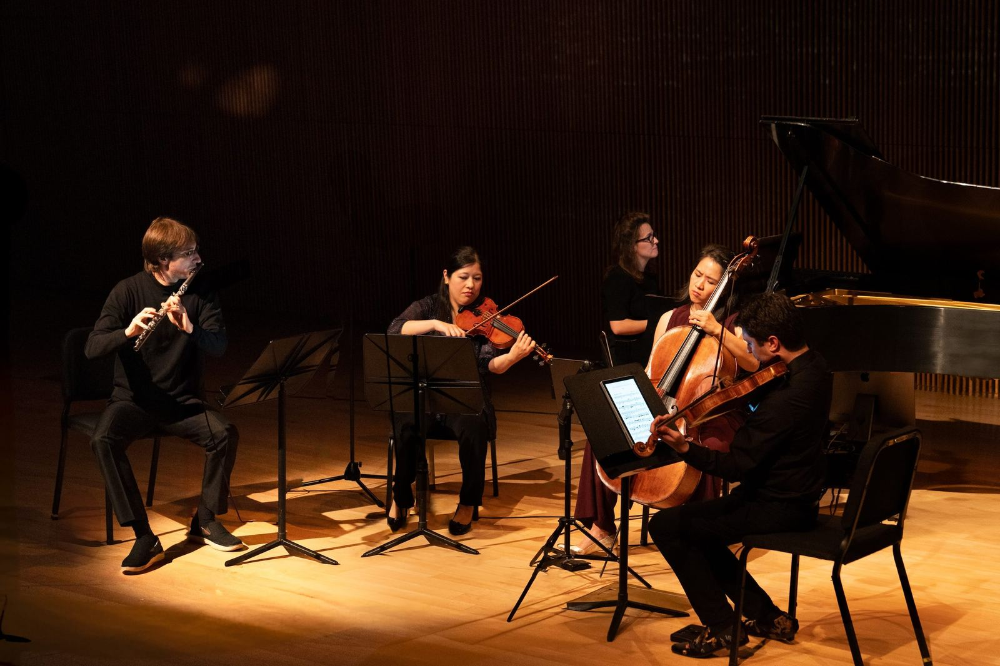

§ 06Prensa
Lo que se ha escrito
Introspección y abandono musical.Mundo Clásico
Entre las recomendaciones de arte y música.The New Yorker · CreArtBox
Un ensemble dedicado a los eventos multidisciplinares.Time Out · CreArtBox
Aclamada pianista española presenta su temporada en Nueva York.Broadway World